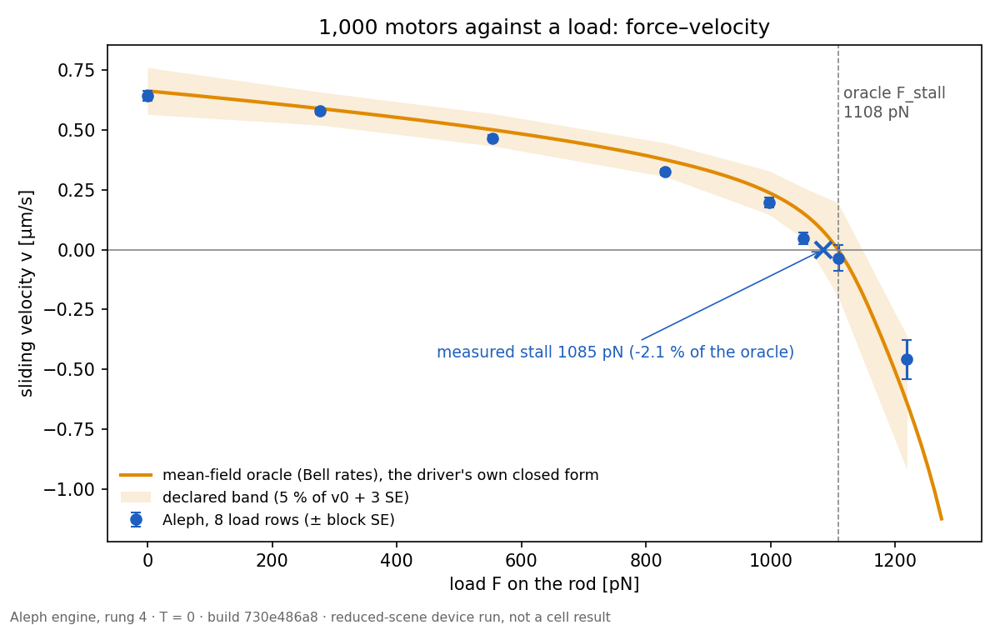

Physics engine
The engine knows nodes, relations between them, one solvent and rate laws. It has no biology noun in it: meaning is given by the cell layer on top.
The engine at work
Aleph builds a cell out of nodes because of its active parts: motors turn chemical energy into force, and only a model that resolves each motor and each filament can show where that force goes. Every scene below is the engine's own record, played back in 3-D. Nothing is drawn that the record does not hold; between two saved steps the motion is interpolated for display, and each scene says so. The cortical-tension instruments (plate, indentation, micropipette, flicker, tether) run on the whole mini cell are on the Experiments page.
How to read these scenes
- Node
- the engine's one kind of object: a small bead with mass and a radius. Filaments, membranes and motors are all nodes.
- Cortex
- the mesh of actin filaments just under the membrane.
- Myosin minifilament
- a bundle of myosin motors whose heads reach out to actin.
- Crossbridge, stroke
- a myosin head holding actin; the stroke is the step in which it pulls.
- FORCE-ACCEPTED (10 Newton/step)
- each time step got a budget of 10 solver iterations (not a force of 10 newtons) and kept what the solver reached, without solving it fully.
- Residual
- the force left unbalanced when the solver stopped.
site_demo_b3b_20260925_050771_7_1e714e687
commit 1e714e687
C4's PREREG-lite verdict: all three pass
A ball comes to rest on a plate
C4's signed B3b scene: a 0.5 µm ball pushed toward a plate with a steady 1 pN force, through water it feels only as drag. It falls, touches and stops without passing into the plate. The gold arrow is the force applied to it; the blue arrow is the push the plate gives back, which grows as the ball arrives until the two balance. The engine has no contact friction: the plate pushes only straight back.
- At rest the plate pushes back 0.998 of the applied force, within the ±5 % signed before the run; the ball's final speed is 0.18 % of its free-fall speed (≤ 1 % signed).
- No node on the wrong side of the plate and no overlap at any step. It rests 6.8 nm above the plate.
Five steps of 1 ms, each 1.1 s on screen, positions and forces interpolated between steps for display; the last step is held.
Reduced-scene device run (a small scene on the GPU, compared with a closed form declared in advance); not a cell result. It stopped at the first step whose net force is below tolerance. This figure is not a physics conclusion.
Source
- Record
- site_demo_b3b_20260925_050771_7_1e714e687
- Commit
- 1e714e687
Missing: no contact friction (the scene says 'no friction'); the drag is each node's own 6πηR, no water grid in this scene. Inputs are EXAMPLE values (directive 10).
flicker_mv_ka_mini_…_f1ecaee15
commit f1ecaee15
no class assigned; 10 Newton/step, residual median 3.25e+03 pN
Microvilli on the cell surface
Where the microvilli are densest on a mini cell that has them: every membrane, microvillus and cortex node within 1.3 µm, through 100 steps of 10 ms. Each microvillus is a bundle of actin (orange) rooted in the cortex (green), inside a tube of membrane (grey) that the build wraps around it. Turned so the cell's outside is up.
- 3,994 microvillus nodes, 6,080 membrane nodes and 8,106 cortex nodes in this patch; the membrane's 11,873 triangles include the tubes.
- Over this second the surface barely moves: the microvilli sway by a few nanometres.
Every 2nd of 100 recorded steps is shown; positions in between interpolated for display. Families left out of this view: all but membrane, microvilli and cortex.
Mini record (1.5 M nodes); no evidence class assigned in the download (no score file). Step readings over its 100 steps: residual median 3.25e+03 pN (step-end net force), contact share 1.00, 10 Newton/step (median). A patch of it. This figure is not a physics conclusion.
Source
- Record
- flicker-0926-f1ecaee15 / flicker_mv_ka_mini_20260926_053300_f1ecaee15
- Commit
- f1ecaee15
Missing: this record's layout carries no ledger, so it declares none of its own; its build is the one described on the Microvilli part page.
qs_long_bt_nogrowth_20260925_040000_b496c1527
commit b496c1527
FORCE-ACCEPTED (10 Newton/step)
A micron-wide patch of cortex, bond by bond
Every node and bond within 0.55 µm of the myosin minifilament with the most heads bound at the last saved step, through its 15 saved steps. Alpha-actinin (blue) ties cortex filaments together; myosin heads (amber) grab actin, stroke and let go; ERM tethers (red) hold the membrane (grey) to the cortex. A bond that forms flashes white; one that lets go fades out.
- Over the 1.4 s shown: 153 alpha-actinin bonds formed and 136 let go;
- 25 myosin heads grabbed actin, 14 let go and 9 made their power stroke;
- 658 ERM tethers formed and 692 let go.
Saved every 10 steps (0.1 s); positions in between are interpolated for display.
FORCE-ACCEPTED (10 Newton/step) native record (residual median 6.38e+03 pN, contact share 1.00; step_readings): each step is what the solver reached in the iterations it had. This figure is not a physics conclusion.
Source
- Record
- qs_long_bt_nogrowth_20260925_040000_b496c1527
- Commit
- b496c1527
Missing: none declared (the ledger of this record has no missing_declared key). Unread (cell/language.py at b496c1527): BOUNDED_OMISSIONS['cytosol_electrochemistry'], ABSENT_IN_SPECIMEN['integrin', 'clutch', 'substrate']. In plain terms: no ion chemistry, and nothing for the cell to stick to.
qs_long_bt_nogrowth_20260925_040000_b496c1527
commit b496c1527
FORCE-ACCEPTED (10 Newton/step)
One myosin minifilament at work
A close-up of the same minifilament: every node and bond within 0.3 µm of it. A bound head sits a few nanometres from its actin, so each one is marked by a sphere: amber when bound, glowing gold after its stroke (most bound heads in this record are past their stroke). Markers grow as a head binds and shrink as it lets go; everything but the heads is dimmed. This is the motor the engine exists for, inside the full cell rather than in a test rig.
- Over the 1.4 s shown: 17 myosin heads grabbed actin, 8 let go and 4 made their power stroke;
- 10 heads are bound at the last saved step.
Saved every 10 steps (0.1 s); positions in between are interpolated for display.
FORCE-ACCEPTED (10 Newton/step) native record (residual median 6.38e+03 pN, contact share 1.00; step_readings): each step is what the solver reached in the iterations it had. This figure is not a physics conclusion.
Source
- Record
- qs_long_bt_nogrowth_20260925_040000_b496c1527
- Commit
- b496c1527
Missing: none declared (the ledger of this record has no missing_declared key). Unread (cell/language.py at b496c1527): BOUNDED_OMISSIONS['cytosol_electrochemistry'], ABSENT_IN_SPECIMEN['integrin', 'clutch', 'substrate']. In plain terms: no ion chemistry, and nothing for the cell to stick to.
qs_long_bt_nogrowth_20260925_040000_b496c1527
commit b496c1527
FORCE-ACCEPTED (10 Newton/step)
Cargo, microtubules and the motors between them
Where the most cargo is held by motors in the simulated cell: every microtubule node (cyan) and every cargo node within 1.2 µm, through the 15 saved steps, each with the path it took. Kinesin and dynein are relations between a cargo and a microtubule; a cargo held by one right now is bright gold, a free one dim. At any moment most cargo here is free, and its path wanders; other families are left out of this view.
- Over the 1.4 s shown: 6 kinesin-cargo and 5 dynein-cargo bonds formed; 4 and 3 let go.
- Across the whole cell, cargo nodes moved a median 0.88 µm over these 1.4 s.
Saved every 10 steps (0.1 s); positions in between are interpolated for display.
FORCE-ACCEPTED (10 Newton/step) native record (residual median 6.38e+03 pN, contact share 1.00; step_readings): each step is what the solver reached in the iterations it had. This figure is not a physics conclusion.
Source
- Record
- qs_long_bt_nogrowth_20260925_040000_b496c1527
- Commit
- b496c1527
Missing: none declared (the ledger of this record has no missing_declared key). Unread (cell/language.py at b496c1527): BOUNDED_OMISSIONS['cytosol_electrochemistry'], ABSENT_IN_SPECIMEN['integrin', 'clutch', 'substrate']. In plain terms: no ion chemistry, and nothing for the cell to stick to.
show94_rung4bC_…_c21a26b2e
commit c21a26b2e
frames only, T = 0, dt 1e-4 s
The cell's own myosin minifilament sliding two actin filaments
The engine's rung 4b rig: the myosin II minifilament the cell is built with (backbone, arms and 60 heads) placed between two free actin filaments of 40 nodes, at zero temperature, for 3 s. Heads within reach grab an actin filament (amber), stroke (glowing gold) and let go, and the two filaments slide apart. Seen from above.
- Up to 12 heads bound at once, 45 bindings in all; the two filaments slide 0.445 µm apart over the 3 s.
- At body temperature this rig cannot be stepped with this solver yet (a thermal kick moves a node two segments per step); the zero-temperature row is the one that can.
Recorded every 10 steps of 0.1 ms; every 13th recorded step is shown, positions in between interpolated for display.
Reduced-scene device run, frames only (the rung writes no gate record under --record); not a cell result. This figure is not a physics conclusion.
Source
- Record
- show94_rung4bC_20260925_050757_81_c21a26b2e / rung4b_T0_sign+1_dt1e-04_pcg_fd_exact
- Commit
- c21a26b2e
Missing: this frames-only run declares none of its own; the rung's gate record carries its bands. Zero temperature: no thermal motion in this row.
show94_rung4slide_…_c21a26b2e
commit c21a26b2e
frames only, dt 1e-5 s, zero load
A thousand motors sliding one rod past another
The engine's rung 4 rig at zero load: two rods of 200 nodes on one line, and 1,000 motor slots on the upper rod that bind the lower rod, stroke and let go. The window shows 1 µm of the 10 µm overlap, every node and motor inside it, side on. In the run both rods lie on one line; here the lower rod is drawn 60 nm below it so the motors between them can be seen. Amber: bound, before its stroke; light blue: after it. A motor that binds flashes white; one that lets go fades.
- The upper rod slides 0.098 µm in the 0.15 s recorded, about 0.65 µm/s; this rig's gate run measured 0.644 ± 0.023 µm/s against the closed form's 0.6625 ('Motors sliding filaments' below).
- At any moment about 150 motors are bound before their stroke and about 320 after it, across the whole overlap.
Recorded every 50 steps of 10 µs; every 2nd recorded step is shown, positions in between interpolated for display. The zero-load tie to the holder is not drawn.
Reduced-scene device run, frames only (the rung writes no gate record under --record); not a cell result. This figure is not a physics conclusion.
Source
- Record
- show94_rung4slide_20260925_050757_75_c21a26b2e / rung4_B_zero_load
- Commit
- c21a26b2e
Missing: this frames-only run declares none of its own; the rung's gate record carries its bands.
show94_rung4walk_…_c21a26b2e
commit c21a26b2e
frames only, dt 1e-5 s, zero load
The same motors, stroking as a walk
The same rig with the stroke made a walk: each bound motor steps along the lower rod's polarity instead of pulling on a fixed point. Zero load. Amber: a motor bound, before its step; light blue: after it. A motor that binds flashes white; one that lets go fades. The window shows 1.4 µm, every node and motor inside it, side on; the lower rod is drawn 120 nm below its true line so the motors can be seen, and the zero-load holder tie is not drawn.
- The upper rod walks 1.29 µm in the 0.15 s recorded, about 8.6 µm/s at zero load.
Recorded every 50 steps of 10 µs; every 2nd recorded step is shown, positions in between interpolated for display.
Reduced-scene device run, frames only (the rung writes no gate record under --record); not a cell result. This figure is not a physics conclusion.
Source
- Record
- show94_rung4walk_20260925_050757_76_c21a26b2e / rung4_M_walk_F0.0
- Commit
- c21a26b2e
Missing: this frames-only run declares none of its own; the rung's gate record carries its bands.
show94_b2_20260925_050757_71_c21a26b2e
commit c21a26b2e
FORCE-ACCEPTED (3 Newton/step)
A bead settling through still water, and the flow it makes
C5's signed B2 scene: one bead smaller than a grid cell, pushed by a steady force through a 32³ box of still water for 40 steps. The lines are streamlines of the water velocity the run kept at every step, traced through that field for display (not simulated); a bright pulse runs along each, faster where the water is faster. Blue is nearly still water, yellow as fast as the bead.
- The bead's speed over the last 10 steps is 0.988 of Stokes' law, inside the ±3 % signed before the run.
- The water next to the bead moves with it; in the closed box the water it pushes comes back around the sides.
One step of the run is 0.2 s on screen; the kept velocity is interpolated between steps and the streamlines are retraced as it changes.
Reduced-scene device run (a small scene on the GPU, compared with a closed form declared in advance); not a cell result. FORCE-ACCEPTED (3 Newton/step) / residual median 2.58e-15 pN (step-end net force, 40 steps) / contact share 0.00 (Sdf+Barrier / all, at the argmax node; median of 40 steps). This figure is not a physics conclusion.
Source
- Record
- show94_b2_20260925_050757_71_c21a26b2e
- Commit
- c21a26b2e
Missing (declared in show94_b2_20260925_050757_71_c21a26b2e/showcase.json missing_declared): fluid v1: no thermal stress in the solvent and no noise on the face friction; sub-grid beads only: a resolved sphere slips in v1 (its coupling is the grid-scale face friction). This is a re-run of the signed scene with the water velocity kept; its numbers are identical to the gate run site_demo_b2_20260925_050770_7_b305a5ffc.
show94_b4_20260925_050757_79_c21a26b2e
commit c21a26b2e
FORCE-ACCEPTED (3 Newton/step)
Two beads settling side by side
C5's signed B4 scene: two beads, 8 grid radii apart, pushed across the line between them through a 128³ box of still water for 40 steps. Shown: the window of water around them (44³ cells, every cell at full resolution). The lines are streamlines of the water velocity the run kept, traced through it for display (not simulated).
- Each bead of the pair falls 3.1 % faster than a lone bead in the same box; Rotne–Prager predicts 4.7 %.
- That is 0.66 of the prediction, outside the ±25 % signed before the run: this check does not match (see the checks below).
One step of the run is 0.2 s on screen; the water velocity is kept every 4th step and interpolated between for display.
Reduced-scene device run (a small scene on the GPU, compared with a closed form declared in advance); not a cell result. FORCE-ACCEPTED (3 Newton/step) / residual median 9.53e-15 pN (step-end net force, 80 steps) / contact share 0.00 (Sdf+Barrier / all, at the argmax node; median of 80 steps). This figure is not a physics conclusion.
Source
- Record
- show94_b4_20260925_050757_79_c21a26b2e
- Commit
- c21a26b2e
Missing (declared in show94_b4_20260925_050757_79_c21a26b2e/showcase.json missing_declared): fluid v1: no thermal stress in the solvent and no noise on the face friction; sub-grid beads only: a resolved sphere slips in v1 (its coupling is the grid-scale face friction); box walls not corrected (d/L = 0.08): the increment carries their image effect. A re-run of the signed scene with the water kept; its numbers equal the gate run site_demo_b4_20260925_050770_7_b305a5ffc.
show94_b6_20260925_050757_72_c21a26b2e
commit c21a26b2e
fluid-only solve (300 Uzawa iterations; no Newton)
Suction into a capped pipette
C5's signed B6 scene: a glass pipette in a 16 × 8 × 8 µm box of water, its far end capped, suction held inside the bore. Two colours of ink are released from 25 points in front of the mouth, alternating by row, and carried by the water velocity the solve returned, so you can watch the suction draw them in. The ink is drawn into the recorded flow for display, not simulated by the engine; the faint lines are streamlines of the same field.
- The flow through the bore is 0.945 of Poiseuille flow at the bore's own pressure gradient, inside the ±10 % signed before the run.
- 0.64 of the set pressure drop reaches the bore.
One steady solve, no time steps: the ink moves at the recorded velocity on a display clock (1 s on screen ≈ 2.3 ms of flow) and fades with a 10 s half-life on screen.
Reduced-scene device run (a small scene on the GPU, compared with a closed form declared in advance); not a cell result. fluid-only solve (300 Uzawa iterations; no Newton) / masked r_div 0.000262 /s, r_mom 1.19e-07 pN/um^3 at the end / contact share n/a (no contact terms: fluid only). This figure is not a physics conclusion.
Source
- Record
- show94_b6_20260925_050757_72_c21a26b2e
- Commit
- c21a26b2e
Missing (declared in show94_b6_20260925_050757_72_c21a26b2e/showcase.json missing_declared): fluid v1: no thermal stress in the solvent and no noise on the face friction; no membrane in this scene; in a cell scene v1's membrane normal coupling is the grid face friction, ~2.3e7 x more permeable than the membrane's Lp (DESIGN-2026-09-24-c5-pipette-suction s4); the glass is held MAC faces (the ANY coarse rule), the far end capped (the syringe line); an open far end delivered ~1/3 of the set dP to the bore (DESIGN 52c213bc3). This is a re-run of the signed scene with the water velocity kept; its numbers are identical to the gate run site_demo_b6_20260925_050770_7_b305a5ffc.
show94_rung7_…_c21a26b2e
commit c21a26b2e
frames only, one steady solve
A rod pulled sideways through water, and its flow
The engine's rung 7 scene: a 5 µm rod of 101 nodes held in a 12.8 µm box of water while the water is solved for a sideways pull. Two colours of ink are released from 21 points 1 µm behind the rod and carried by the solved velocity: the water next to the rod is dragged along and the rest comes back around its ends. The ink is drawn into the recorded flow for display, not simulated; the faint lines are streamlines of the same field.
- A rod is harder to pull sideways than along its length; the gate run puts the drag ratio at 1.527, inside the slender-body band 1.482 to 2.005 ('Water dragged by a moving rod' below).
- This frames run's own tensor check printed a failure (K∥/K⊥ = 0.46); frames runs use a reduced configuration and write no gate record.
One steady solve, no time steps: the ink moves at the recorded velocity on a display clock (1 s on screen ≈ 5.2 s of flow) and fades with a 10 s half-life on screen; the pulses' pace shows relative speed.
Reduced-scene device run, frames only (the rung writes no gate record under --record); not a cell result. This figure is not a physics conclusion.
Source
- Record
- show94_rung7_20260925_050757_77_c21a26b2e / rung7_rod_perpendicular
- Commit
- c21a26b2e
Missing: this frames-only run declares none of its own; the rung's gate record carries its bands.
site_demo_b5_20260925_050770_7_b305a5ffc
commit b305a5ffc
FORCE-ACCEPTED (3 Newton/step)
Sixty-four beads kicked by heat
C5's signed B5 scene: 64 free beads in still water, each kicked by heat at every step, for 400 steps. Every bead is drawn at its own radius with the path it took, nothing scaled up. Their spread is what the diffusion check below measures.
- The beads spread 1.89 ± 0.07 (2 SE) times faster than Stokes–Einstein, inside the bracket [1, 2] written before the run.
- Why above 1: in this version the water has no thermal agitation of its own, so the kick acts on the bead's own drag and the water carries it.
Every 2nd of 401 recorded steps is shown; positions in between are interpolated for display.
Reduced-scene device run (a small scene on the GPU, compared with a closed form declared in advance); not a cell result. FORCE-ACCEPTED (3 Newton/step). This figure is not a physics conclusion.
Source
- Record
- site_demo_b5_20260925_050770_7_b305a5ffc
- Commit
- b305a5ffc
Missing (declared in site_demo_b5_20260925_050770_7_b305a5ffc/record.json missing_declared): v1 lacks the solvent's thermal stress: the thermal kick acts on the node's own drag only, so the grid carries the kicked node and D exceeds Stokes-Einstein by up to 1/(1 - R/r_eff); sub-grid beads only: a resolved sphere slips in v1.
show94_rung1_…_c21a26b2e
commit c21a26b2e
frames only, implicit dt 1e-5 s
Sixteen actin filaments shaken by heat
The engine's rung 1 scene: 16 independent 5 µm actin filaments, each 101 nodes in water at 310 K, for 8,000 steps of 10 µs (0.08 s). Each is kicked by heat and bends and stretches under its own laws; nothing else acts on it. The replicas ran far apart; for display each is moved and turned whole (one rotation for all its frames) into a row, 0.45 µm apart; its motion within itself is the record's.
- This scene's gate run matches the worm-like chain's long-wavelength bending (see 'A filament shaken by heat' below); the short-scale bending does not, at practical steps.
Recorded every 40 steps (0.4 ms), 200 frames; positions in between are interpolated for display.
Reduced-scene device run, frames only (the rung writes no gate record under --record); not a cell result. This figure is not a physics conclusion.
Source
- Record
- show94_rung1_20260925_050757_73_c21a26b2e / rung1_implicit_dt1e-05
- Commit
- c21a26b2e
Missing: this frames-only run declares none of its own; the rung's gate record carries its bands.
show94_rung5_…_c21a26b2e
commit c21a26b2e
frames only, dt 1e-4 s, relaxation
A closed membrane relaxing
The engine's rung 5 scene: a closed surface of 2,562 nodes and 5,120 triangles, built slightly inflated, relaxing under its own tension and pressure for 1,000 steps of 0.1 ms. The faint wire is its first saved shape, so the shrink can be seen against it.
- Its mean radius goes from 1.050 to 1.003 µm (−4.5 %) over the 0.1 s recorded.
- The gate run follows the textbook exponential to six digits; at 310 K the same surface breaks down at every tested time step ('A membrane shell relaxing' below).
Recorded every 10 steps; positions in between interpolated for display.
Reduced-scene device run, frames only (the rung writes no gate record under --record); not a cell result. This figure is not a physics conclusion.
Source
- Record
- show94_rung5_20260925_050757_78_c21a26b2e / rung5_relax_dt1e-04
- Commit
- c21a26b2e
Missing: this frames-only run declares none of its own; the rung's gate record carries its bands.
Re-shot at T = 0 on today's build
These are the engine's own verification scenes and motor rigs, not cell results. Each was re-run on 2026-09-30 on build 730e486a8 with no thermal kick (T = 0). Every video draws the textbook answer over the simulation and names the engine limit it shows, and its footer prints the share of steps meeting the declared force tolerance. Under Motors, a force–velocity sweep and four scenes played back in 3-D from their records, two of them from a patch of cortex.
How these were run
A step meets the declared force tolerance when the net force left on the nodes is within the scene's declared tolerance. The other steps are where the solver stopped short of it: it stalled, or reached its cap of 200 Newton iterations.
The solid scenes are scaled macroscopic analogues in engine units (µm, pN, s), not cell-sized objects. The water scenes are at cell scale (µm, µs), in a 64³ Stokes grid.
The archive's automatic stage-1 scorer marks the verification and motor-rig records INVALID because it looks for a cell run's ledger, which these runs do not write. The cortex record is scored: every one of its 200 steps is FORCE-ACCEPTED.
Solids
Source
- Record
- verify_t0sA1_20260930_163319_002_730e486a8
- Commit
- 730e486a8
- Class
- Reduced-scene device run at T = 0 (a small scene on the GPU, the closed form drawn over it); a showcase recording, unscored; not a cell result. 1,400 of 1,400 steps met the declared force tolerance; Newton iterations per step median 1, max 2.
Source
- Record
- verify_t0sA2_20260930_163319_003_730e486a8
- Commit
- 730e486a8
- Class
- Reduced-scene device run at T = 0 (a small scene on the GPU, the closed form drawn over it); a showcase recording, unscored; not a cell result. 800 of 800 steps met the declared force tolerance; Newton iterations per step median 1, max 2.
Source
- Record
- verify_t0sA5_20260930_163319_004_730e486a8
- Commit
- 730e486a8
- Class
- Reduced-scene device run at T = 0 (a small scene on the GPU, the closed form drawn over it); a showcase recording, unscored; not a cell result. 1,000 of 1,000 steps met the declared force tolerance; Newton iterations per step median 1, max 1.
Source
- Record
- verify_t0sA3_20260930_163319_005_730e486a8
- Commit
- 730e486a8
- Class
- Reduced-scene device run at T = 0 (a small scene on the GPU, the closed form drawn over it); a showcase recording, unscored; not a cell result. 3,174 of 3,200 steps met the declared force tolerance; Newton iterations per step median 2, max 200 (the cap).
Source
- Record
- verify_t0sA4b08_20260930_153308_002_730e486a8 and verify_t0sA4b15_20260930_153308_003_730e486a8
- Commit
- 730e486a8
- Class
- Reduced-scene device run at T = 0 (a small scene on the GPU, the closed form drawn over it); a showcase recording, unscored; not a cell result. 0.8 F_c: 2,000 of 2,000 steps met the declared force tolerance, Newton iterations per step median 1, max 2. 1.5 F_c: 2,000 of 2,000, median 3, max 4.
Source
- Record
- verify_t0sA4c_20260930_153308_001_730e486a8
- Commit
- 730e486a8
- Class
- Reduced-scene device run at T = 0 (a small scene on the GPU, the closed form drawn over it); a showcase recording, unscored; not a cell result. 1,500 of 1,500 steps met the declared force tolerance; Newton iterations per step median 0, max 2.
Source
- Record
- verify_t0sC1_20260930_153308_035_730e486a8
- Commit
- 730e486a8
- Class
- Reduced-scene device run at T = 0 (a small scene on the GPU, the closed form drawn over it); a showcase recording, unscored; not a cell result. 3,999 of 4,000 steps met the declared force tolerance; Newton iterations per step median 2, max 200 (the cap).
Source
- Record
- verify_t0sC3_20260930_153308_006_730e486a8
- Commit
- 730e486a8
- Class
- Reduced-scene device run at T = 0 (a small scene on the GPU, the closed form drawn over it); a showcase recording, unscored; not a cell result. 2,974 of 3,000 steps met the declared force tolerance; Newton iterations per step median 1, max 200 (the cap).
Source
- Record
- verify_t0sC4_20260930_153308_010_730e486a8
- Commit
- 730e486a8
- Class
- Reduced-scene device run at T = 0 (a small scene on the GPU, the closed form drawn over it); a showcase recording, unscored; not a cell result. 2,949 of 3,000 steps met the declared force tolerance; Newton iterations per step median 1, max 16.
Source
- Record
- verify_t0sC6_20260930_153308_011_730e486a8
- Commit
- 730e486a8
- Class
- Reduced-scene device run at T = 0 (a small scene on the GPU, the closed form drawn over it); a showcase recording, unscored; not a cell result. 2,976 of 3,000 steps met the declared force tolerance; Newton iterations per step median 1, max 11.
Source
- Record
- verify_t0sC7_20260930_153308_012_730e486a8
- Commit
- 730e486a8
- Class
- Reduced-scene device run at T = 0 (a small scene on the GPU, the closed form drawn over it); a showcase recording, unscored; not a cell result. 3,227 of 4,000 steps met the declared force tolerance; Newton iterations per step median 3, max 200 (the cap).
Water
Source
- Record
- verify_t0sB1_20260930_153308_022_730e486a8
- Commit
- 730e486a8
- Class
- Reduced-scene device run at T = 0 (a small scene on the GPU, the closed form drawn over it); a showcase recording, unscored; not a cell result. 150 of 150 steps met the declared force tolerance; Newton iterations per step median 1, max 1.
Source
- Record
- verify_t0sB2on_20260930_153308_023_730e486a8 and verify_t0sB2off_20260930_153308_024_730e486a8
- Commit
- 730e486a8
- Class
- Reduced-scene device run at T = 0 (a small scene on the GPU, the closed form drawn over it); a showcase recording, unscored; not a cell result. Solvent on and free-draining: 150 of 150 steps each met the declared force tolerance; Newton iterations per step median 1, max 1.
Source
- Record
- verify_t0sS3_20260930_153308_025_730e486a8
- Commit
- 730e486a8
- Class
- Reduced-scene device run at T = 0 (a small scene on the GPU, the closed form drawn over it); a showcase recording, unscored; not a cell result. 150 of 150 steps met the declared force tolerance; Newton iterations per step median 1, max 1.
Source
- Record
- verify_t0sB3_20260930_153308_026_730e486a8
- Commit
- 730e486a8
- Class
- Reduced-scene device run at T = 0 (a small scene on the GPU, the closed form drawn over it); a showcase recording, unscored; not a cell result. Each of the four viscosities: 1,400 of 1,400 steps met the declared force tolerance; Newton iterations per step median 1, max 1 or 2.
Motors

Source
- Record
- rung4sweep_t0s_20260930_163319_001_730e486a8
- Commit
- 730e486a8
- Class
- Reduced-scene device run at T = 0; not a cell result. A frames run: its log notes that the rung's bands belong to its gate runs, so these rows are not a gate result.
rung4walk_t0s_…_730e486a8
commit 730e486a8
T = 0, dt 1e-5 s, zero load
The same 1,000 motors stroking as a walk
The same rig with the stroke made a walk: each bound motor steps along the lower rod's polarity instead of pulling on a fixed point. Zero load. Amber: a motor bound, before its step; light blue: after it. A motor that binds flashes white; one that lets go fades. The window shows 1.4 µm, every node and motor inside it, side on; the lower rod is drawn 120 nm below its true line so the motors can be seen, and the zero-load holder tie is not drawn.
- Zero load: the upper rod walks at 8.36 ± 0.13 µm/s against its replica oracle's 8.32 (the closed form, 6.82, is printed as context only).
- At half the closed-form stall (9,615 pN): 3.23 ± 0.09 µm/s; the replica gives 3.24 and the closed form 3.41.
- The two walk-direction controls give +5.57 and −5.58 µm/s: symmetric to 0.007 µm/s.
Recorded every 50 steps of 10 µs; every 2nd recorded step is shown, positions in between interpolated for display.
Reduced-scene device run at T = 0, a frames run (its log notes that the rung's bands belong to its gate runs); not a cell result. This figure is not a physics conclusion.
Source
- Record
- rung4walk_t0s_20260930_163319_009_730e486a8 / rung4_M_walk_F0.0
- Commit
- 730e486a8
Missing: a frames run declares none of its own; the rung's gate runs carry its bands. Zero temperature: no thermal motion.
rung4b_t0s_…_730e486a8
commit 730e486a8
T = 0, dt 1e-4 s
The cell's own myosin minifilament between two actin filaments
The engine's rung 4b rig at T = 0: the myosin II minifilament the cell is built with (a backbone, and 60 heads on arms) placed between two free actin filaments of 40 nodes, for 3 s. Crossbridges are coloured by state: amber is bound, before the stroke; red is after the stroke.
- The two filaments slide apart at +0.1475 ± 0.0227 µm/s, 0.445 µm in the 3 s; their gap goes from 0.400 to 0.399 µm.
- On average 6.3 of the 60 heads are bound, between 0 and 12 at the saved steps.
- This row is descriptive: the rung-4 closed form, 0.119 µm/s, is printed beside it as context, not as its oracle.
Recorded every 20 steps of 0.1 ms; every 5th recorded step is shown, positions in between interpolated for display.
Reduced-scene device run at T = 0 (row C of rung 4b, descriptive); not a cell result. This figure is not a physics conclusion.
Source
- Record
- rung4b_t0s_20260930_153308_032_730e486a8 / rung4b_T0_sign+1_dt1e-04_pcg_fd_exact
- Commit
- 730e486a8
Missing: a frames run declares none of its own; the rung's gate runs carry its bands. Zero temperature: no thermal motion.
qs_t0_U3movieN3_…_730e486a8
commit 730e486a8
FORCE-ACCEPTED (3 Newton/step), T = 0
A patch of cortex at T = 0: branched actin, crosslinks and myosin
Every node and bond within 0.6 µm of the densest cluster of bound myosin heads at the last saved step (9,162 nodes), in a cortex unit of 475,851 live nodes (517,004 allocated) run for 200 steps of 0.01 s. Actin (green) carries Arp2/3 branches; crosslinks (blue) tie filaments together; myosin heads (amber) grab actin, stroke and let go; ERM tethers (red) hold the membrane (grey) to the cortex. A bond that forms flashes white; one that lets go fades out.
- Over the 1.9 s shown, in this patch: 1,010 ERM tethers formed and 1,037 let go; 45 crosslinks formed and 34 let go; 10 myosin heads grabbed actin and 8 let go. No Arp2/3 branch formed or let go.
- Across the whole unit only 47 of its 2,760 myosin heads hold a crossbridge at the last step (4 of them in this patch), so most of what changes here is ERM tethers binding and letting go.
Saved every 10 steps (0.1 s); positions in between are interpolated for display.
FORCE-ACCEPTED (3 Newton/step): all 200 steps kept what the solver reached in 3 iterations, median net force 1,041 pN against a declared tolerance of 0.086 pN. A cortex unit, not a whole cell. This figure is not a physics conclusion.
Source
- Record
- qs_t0_U3movieN3_20260930_163319_007_730e486a8
- Commit
- 730e486a8
Missing: no thermal kick (T = 0) and no filament growth in this run. The unit is built at a development radius of 2.25 µm, from which its spec says no conclusion is drawn.
qs_t0_U3movieN3_…_730e486a8
commit 730e486a8
FORCE-ACCEPTED (3 Newton/step), T = 0
The bound myosin heads, close up
The same spot at 0.3 µm: every node and bond within 0.3 µm of the densest cluster of bound heads at the last saved step (4 heads). A bound head sits a few nanometres from its actin, so each one is marked by a sphere: amber when bound, glowing gold after its stroke. Markers grow as a head binds and shrink as it lets go; everything but the heads is dimmed.
- Over the 1.9 s shown: 8 myosin heads grabbed actin and 6 let go; 4 are bound at the last saved step.
- In the same 0.3 µm: 240 ERM tethers formed and 250 let go.
Saved every 10 steps (0.1 s); positions in between are interpolated for display.
FORCE-ACCEPTED (3 Newton/step): all 200 steps kept what the solver reached in 3 iterations, median net force 1,041 pN against a declared tolerance of 0.086 pN. A cortex unit, not a whole cell. This figure is not a physics conclusion.
Source
- Record
- qs_t0_U3movieN3_20260930_163319_007_730e486a8
- Commit
- 730e486a8
Missing: no thermal kick (T = 0) and no filament growth in this run. The unit is built at a development radius of 2.25 µm, from which its spec says no conclusion is drawn.
Coming in the next batch
- Cloth: its run stopped at its time limit at step 2,800 of 4,000, before writing a video, and did not get a second turn in this allocation.
- A squeezed rod: being re-worked, as its contact steps do not meet the tolerance (it ran about 4.8 s per step and was stopped at step 240 of 2,400).
- Newton's cradle: being re-worked, as its contact steps do not meet the tolerance.
Checks against textbook answers
Before it can say anything about a cell, a physics engine has to get simple things right. Each demo below is a small scene with a known textbook answer, run on the GPU and compared with that answer. Failures are shown too.
Water dragged by a moving rod
A 5 µm rod is pulled along its axis through still water. The orange ticks show the water it drags along, brighter where it moves faster.
Compared with. A rod is about twice as hard to pull sideways as lengthwise. Measured ratio 1.53, inside the textbook range 1.48 to 2.01.
Source
- Record
- rung 7
- Commit
- 39ad3025
MatchesFigureDrag that comes from the flow
A ball of nodes held in moving water. Its drag is read from the flow it creates, then compared across grid sizes.
Compared with. The ball's effective size converges to within 0.1 % of the value published for this kind of grid. One of the scene's checks failed and was later retired.
Source
- Record
- rung 6
- Commit
- 8a9b481a
Partly matchesFigureA filament shaken by heat
A 5 µm actin filament in water at body temperature, bent by thermal kicks.
Compared with. How far it bends over long distances matches the worm-like chain (persistence length 17.06 vs 17.06 µm). The short-scale bending does not match at practical time steps.
Source
- Record
- rung 1
- Commit
- 78286875
Partly matchesFigureA membrane shell relaxing
A small closed membrane, inflated a little, relaxing back under its own tension and pressure.
Compared with. The relaxation follows the textbook exponential to six digits. At body temperature the same surface breaks down.
Source
- Record
- rung 5
- Commit
- not stamped
Partly matchesFigureMotors sliding filaments
Two rods and a set of motor heads that bind, stroke and let go.
Compared with. The sliding speed and the stall force match their formulas: 0.644 vs 0.6625 µm/s, and 1104 vs 1108 pN.
Source
- Record
- rung 4
- Commit
- e1059308
MatchesFigureFilaments that do not stretch
A chain of nodes held at exact length while it moves.
Compared with. The length error stays at 2 × 10⁻¹¹ µm. The same test's bending check failed.
Source
- Record
- rung 8
- Commit
- 74894edb
Partly matchesFigureFlow through a pipette
Suction through a glass pipette on the water grid, the setup of a micropipette experiment.
Compared with. With the pipette's far end capped, the flow is 0.945 of Poiseuille flow at the bore's own measured gradient, inside the ±10 % signed before the run; 0.64 of the set pressure drop reaches the bore.
Missing (declared in site_demo_b6_20260925_050770_7_b305a5ffc/record.json missing_declared): fluid v1: no thermal stress in the solvent and no noise on the face friction; no membrane in this scene; in a cell scene v1's membrane normal coupling is the grid face friction, ~2.3e7 x more permeable than the membrane's Lp (DESIGN-2026-09-24-c5-pipette-suction s4); the glass is held MAC faces (the ANY coarse rule), the far end capped (the syringe line); an open far end delivered ~1/3 of the set dP to the bore (DESIGN 52c213bc3).
fluid-only solve (300 Uzawa iterations; no Newton) / masked r_div 0.000262 /s, r_mom 1.19e-07 pN/um^3 at the end / contact share n/a (no contact terms: fluid only)
The archive's automatic stage-1 scorer marks this record INVALID because it looks for a cell run's ledger; the scene is scored by its own band, signed before the run (PREREG-lite 2026-09-25).
Source
- Record
- site_demo_b6_20260925_050770_7_b305a5ffc
- Commit
- b305a5ffc
MatchesFigureNothing passes through a surface
The full cell, 150 steps: every node checked against every surface at every step.
Compared with. Zero nodes on the wrong side, zero overlaps, at every step.
Source
- Record
- qs_long_bt_nogrowth
- Commit
- b496c1527
MatchesFigureA bead settling
One bead smaller than a grid cell, pushed by a steady force through still water.
Compared with. Its speed over the last 10 of 40 steps is 0.988 of Stokes' law, F/(6πηR), inside the ±3 % signed before the run.
Missing (declared in site_demo_b2_20260925_050770_7_b305a5ffc/record.json missing_declared): fluid v1: no thermal stress in the solvent and no noise on the face friction; sub-grid beads only: a resolved sphere slips in v1 (its coupling is the grid-scale face friction).
FORCE-ACCEPTED (3 Newton/step) / residual median 2.58e-15 pN (step-end net force, 40 steps) / contact share 0.00 (Sdf+Barrier / all, at the argmax node; median of 40 steps)
The archive's automatic stage-1 scorer marks this record INVALID because it looks for a cell run's ledger; the scene is scored by its own band, signed before the run (PREREG-lite 2026-09-25).
Source
- Record
- site_demo_b2_20260925_050770_7_b305a5ffc
- Commit
- b305a5ffc
MatchesFigureTwo beads settling side by side
Two such beads, 8 grid radii apart, pushed across the line between them; a lone bead in the same box is the control.
Compared with. The pair falls 3.1 % faster than the lone bead; Rotne–Prager predicts 4.7 %. That is 0.66 of the prediction, outside the ±25 % signed before the run.
Missing (declared in site_demo_b4_20260925_050770_7_b305a5ffc/record.json missing_declared): fluid v1: no thermal stress in the solvent and no noise on the face friction; sub-grid beads only: a resolved sphere slips in v1 (its coupling is the grid-scale face friction); box walls not corrected (d/L = 0.08): the increment carries their image effect.
FORCE-ACCEPTED (3 Newton/step) / residual median 9.53e-15 pN (step-end net force, 80 steps) / contact share 0.00 (Sdf+Barrier / all, at the argmax node; median of 80 steps)
The archive's automatic stage-1 scorer marks this record INVALID because it looks for a cell run's ledger; the scene is scored by its own band, signed before the run (PREREG-lite 2026-09-25).
Source
- Record
- site_demo_b4_20260925_050770_7_b305a5ffc
- Commit
- b305a5ffc
Does not matchFigureA bead jiggling in water
64 free beads kicked by heat for 400 steps.
Compared with. The beads spread 1.89 ± 0.07 (2 SE) times faster than Stokes–Einstein. Written before the run: a value between 1 and 2, because this version's water has no thermal agitation of its own. It lands inside that bracket; a predicted excess, not a pass.
Missing (declared in site_demo_b5_20260925_050770_7_b305a5ffc/record.json missing_declared): v1 lacks the solvent's thermal stress: the thermal kick acts on the node's own drag only, so the grid carries the kicked node and D exceeds Stokes-Einstein by up to 1/(1 - R/r_eff); sub-grid beads only: a resolved sphere slips in v1.
FORCE-ACCEPTED (3 Newton/step) / residual median 0 pN (step-end net force, 400 steps)
The archive's automatic stage-1 scorer marks this record INVALID because it looks for a cell run's ledger; the scene is scored by its own band, signed before the run (PREREG-lite 2026-09-25).
Source
- Record
- site_demo_b5_20260925_050770_7_b305a5ffc
- Commit
- b305a5ffc
Inside the predicted bracketFigureA sphere coming to rest on a plate
A ball of nodes pushed onto a flat plate, with node drag only and no water.
Compared with. No node crosses the plate at any step (signed: none); the ball's final speed is 0.18 % of its free speed (signed: under 1 %); at rest the plate pushes back 0.998 of the applied force (signed: within ±5 %).
Missing (to be declared in the run's ledger; until then from PREREG-lite 2026-09-25, signed dda5c1d0a, B3b (C4)): The engine has no contact friction: contact pushes only along the normal.
Stopped at step 5 of a 3,000-step cap, the first step whose net force was under the 1e-4 pN tolerance (net force 2.4e-06 pN; 1 to 5 Newton iterations a step, 20 allowed)
The archive's automatic stage-1 scorer marks this record INVALID because it looks for a cell run's ledger; the scene is scored by its own band, signed before the run (PREREG-lite 2026-09-25).
Source
- Record
- site_demo_b3b_20260925_050771_7_1e714e687
- Commit
- 1e714e687
MatchesFigureA sphere pushed along a wall
A ball of nodes pushed parallel to a wall in water, at two distances from it.
Compared with. Its extra drag near the wall against Goldman, Cox and Brenner's solution within ±10 %; the rotation it picks up is reported, not scored.
Missing (to be declared in the run's ledger; until then from PREREG-lite 2026-09-25, signed dda5c1d0a, B3a (C4, conditional)): The engine has no contact friction. Waits for the water scene with a wall.
Source
- Plan
- PREREG-lite 2026-09-25, signed dda5c1d0a, B3a (C4, conditional)
- Class
- reduced-scene device run (small scene on the GPU, compared with a closed form declared in advance); not a cell result
Tolerance signed; run queuedFlow past a held sphere
A sphere held in moving water, with the whole flow field drawn.
Compared with. Not shown in this version: a resolved sphere lets water slip past its surface. It returns with the coupled surface-and-water solve.
Source
- Plan
- PREREG-lite 2026-09-25, signed dda5c1d0a, B1
- Class
- reduced-scene device run (small scene on the GPU, compared with a closed form declared in advance); not a cell result
Not in this versionFree monomers drifting in a force field
Free monomer nodes in still water, all pushed by one uniform force: an integrator check, not a physics result.
Compared with. Their drift against F/γ, within 0.3 % (97.92 against 98.24 µm/s), and their spread against the diffusion constant kT/γ, within 0.1 % (80.77 against 80.84 µm²/s).
Missing (to be declared in the run's ledger; until then from C4's run on the RTX 4090_1 (6.1 s)): Still solvent, declared: no hydrodynamic interaction and no walls. No capture and no growth. N and F are EXAMPLE values; Pe = F·L/(γ·D) = 24.3.
C4's label, quoted: In-vitro monomer field box (C4 7dc0a0c1c, 4090_1): free monomer nodes under a uniform force. Drift = F/γ within 0.3 %, diffusion = kT/γ within 0.1 %. No capture, no growth; a visual of field actuation. N and F EXAMPLE, Pe = F·L/(γ·D) = 24.3. Still solvent (no hydrodynamic interaction, no walls), declared. An integrator check against closed forms, not a physics result. (via c7 12:37 KST 09-28)
Source
- Record
- monomer_field_box_20260928_005_7dc0a0c1c
- Commit
- 7dc0a0c1c
Matches
The engine, part by part
Foundations
- World and nodesThe world is one set of nodes. Every node has a mass and a radius, and every node can move: there is no fixed node and no separate solver per component. Mechanics and hydrodynamics act as one operator over all of them.
- Relation tablesWhat makes a filament different from a crosslink is only the relation between its nodes. Relations live in a few tables — segments, bending triples, faces, bonds — and each table is evaluated by one kernel over all its rows.
Strands
- Axial stretchEvery two-node segment resists a change of length along its axis.Checked against theory on the GPU
- BendingEvery three consecutive nodes of a filament resist bending away from their built shape.Checked against theory on the GPU
- InextensibilityActin and microtubule segments are held at exactly their length by a constraint solved chain by chain, instead of a stiff penalty.Checked against theory on the GPU
Surfaces
- Tension and areaThree nodes make a face. Each face of the membrane and the nuclear envelope carries an in-plane tension that grows when the surface is stretched past its reference area.Checked against theory on the GPU
- Volume and pressureA closed surface encloses a volume; a pressure that depends on that volume pushes on every face.Checked against theory in a code test
- Surface bendingSurfaces resist bending across every edge shared by two faces (discrete Helfrich).Checked against theory on the GPU
- Shear and local areaThe mesh edges give a surface its in-plane shear stiffness; an optional constraint keeps each face's own area.Checked against theory in a code test
Contact
Fluid
- Stokes solventOne Stokes solvent fills the box, inside and outside the cell. Instruments such as a micropipette are pressure boundaries of the same problem.Checked against theory in a code test
- Node–fluid couplingEach node exchanges drag with the grid through a smoothed delta kernel, so drag emerges from the solvent instead of being an input.Checked against theory on the GPU
- Face tractionThe face made by three nodes carries fluid traction through its area — the coupling the engine is designed around.Written, switched off
- Membrane transport and waterA closed surface can let water and solutes through. Each transporting surface names an inner and an outer chemical pool, so a chain of bath, membrane, cytosol, envelope and nucleoplasm is one operator, not one per compartment. Lipids and channels move within the surface, and every exchange of mass is booked: what one side gains, the other loses.Written, switched off
Instruments and loads
Thermal motion
Kinetics
- Rate-table kineticsEvery relation slot walks a continuous-time Markov chain inside the step. A motor is a relation whose transition moves its partner by one site.Checked against theory on the GPU
- Relation and object lifeRelations and whole objects are born and removed by rate laws — a bond detaches, a minifilament disassembles — while the tables keep their shape.Checked against theory in a code test
Time step
- Implicit stepEach time step is an implicit solve of the whole world's energy with Newton iterations and a line search. A step that stops at its iteration budget is recorded as FORCE-ACCEPTED; the native runs on this site are all in that class.
- Linear solversInside each Newton iteration, preconditioned Krylov solvers (CG, MINRES) with per-chain band preconditioners do most of the work of a step.
- Multirate step and coarse levelThe time step is set by the stiffest part of the cell, while most of it moves slowly. These kernels read each node's update rate off the world's own stiffness, carry fast degrees of freedom by their statistics instead of stepping them, and give each closed surface a coarse level for the motions in which the whole surface moves together. Which of them a run used is written in its record.
Record and replay
- Raw recordEvery node's position and force is kept raw at each recorded step, with the solver's own trace, so every figure can be rebuilt from its record.
- Studio and replayA desktop program replays a record with every node, segment and face drawn. One control protocol serves the interface, text files and scripts.